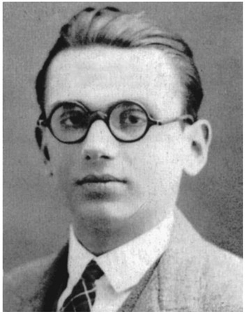
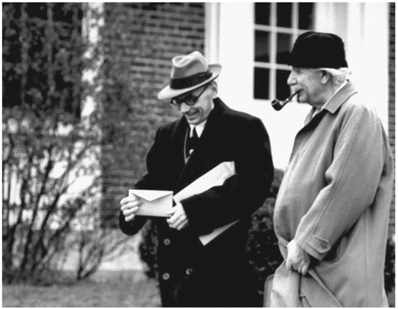

Kurt Gödel: Austrian-American (1906–1978)
In the late nineteenth century, Georg Cantor developed set theory, which became a fundamental theory in mathematics. It offered a common foundation to all fields of mathematics, and mathematicians attempted to formalize Cantor’s set theory by finding a minimal of axioms, from which all further mathematical statements within the theory can be derived. Although this endeavor seemed very promising at the beginning, the axiomatization of set theory ran into serious problems when it was discovered that it suffered from logical paradoxes and inconsistencies. This led to a severe foundational crisis of mathematics. In response to this crisis, mathematician David Hilbert initiated a program to find a complete and finite set of axioms that would provide a stable basis for all existing mathematical systems, from arithmetic and geometry to advanced calculus and all other fields as well. More complicated systems would be proved in terms of simpler systems and these by even simpler systems, and ultimately the consistency of all mathematics would be reduced to basic arithmetic. More precisely, Hilbert’s program to establish secure foundations for all mathematics comprised the following goals:1
- A formulation of all mathematics: all mathematical statements should be written in a precise formal language and manipulated according to well-defined rules.
- Completeness: a proof that all true mathematical statements can be proved in the formalism.
- Consistency: a proof that no contradiction can be obtained in the formalism of mathematics.
- Conservation: a proof that any result about “real objects” obtained using reasoning about “ideal objects” (such as uncountable sets, for instance the set of real numbers) can be proved without using ideal objects.
- Decidability: there should be an algorithm for deciding the truth or falsity of any mathematical statement.
Many well-known logicians and mathematicians spent years on such a program, including Alfred North Whitehead (1861–1947) and Bertrand Russell (1872–1970), who published their monumental work as Principia Mathematica in three volumes in 1910, 1912, and 1913. However, in 1931, young Austrian mathematician Kurt Gödel proved that the goals that Hilbert had formulated were impossible to achieve. He published two famous theorems, known as Gödel’s incompleteness theorems, which ended all attempts to find an all-encompassing set of axioms for mathematics or other formal systems. Roughly speaking, he showed that it is impossible to find a set of axioms sufficient for all mathematics, since for any set of axioms proposed to encapsulate mathematics, either the system must be inconsistent, or there must be some truths of mathematics, which could not be deduced from them. In fact, it is impossible to come up with an axiomatic mathematical theory that captures even all of the truths about the natural numbers. Gödel’s results had a deep impact on the foundations of mathematics, as well as on logic and philosophy. Their significance is perhaps best described by John von Neumann, who said that “Kurt Gödel’s achievement in modern logic is singular and monumental—indeed it is more than a monument, it is a landmark which will remain visible far in space and time. . . . The subject of logic has certainly completely changed its nature and possibilities with Gödel’s achievement.”
Kurt Gödel was born on April 28, 1906, in Brno (German: Brünn), which is now the second largest city in the Czech Republic, but then was part of the Austro-Hungarian Empire. Before World War I, the majority of the population of Brno was German speaking. Gödel’s family was rather wealthy; his father, Rudolf Gödel, was the managing director of a textile factory in Brno. He was Catholic and his wife, Marianne, was Protestant.

Figure 45.1. Kurt Gödel in 1925.
Kurt and his elder brother, Rudolf, were raised Protestant in a country with a Catholic majority. Kurt went through several episodes of poor health as a child. When he was six years old, he suffered from rheumatic fever. Although he recovered well, he became convinced that his heart was permanently damaged as a result of the illness. He arrived at this conclusion when he began to read medical books at the age of 8, initiating a lifelong hypochondria. When the Austro-Hungarian Empire broke up at the end of World War I, Czechoslovakia declared its independence and Gödel’s family automatically became Czechoslovak citizens, suddenly belonging to a German-speaking minority in the Republic of Czechoslovakia. However, Gödel could barely speak Czech and felt alien in this newly founded state. It was common that many of the German-speaking residents still considered themselves Austrian. By the time Gödel completed his school education in Brno, he had mastered university mathematics. Besides mathematics, languages were his favorite subjects. His brother later recalled that during his whole high school career, Kurt had made not a single grammatical error in Latin; needless to say, his schoolwork had always received the top marks. In 1923, Gödel took Austrian citizenship and moved to Vienna. He entered the University of Vienna as a student of theoretical physics. Among his teachers were physicist and philosopher Moritz Schlick (1882–1936) and mathematicians Hans Hahn (1879–1934), Karl Menger (1902–1985), and Philipp Furtwängler (1869–1940). Furtwängler was paralyzed from the neck down and lectured from a wheelchair with an assistant who wrote on the board. He was a brilliant mathematician and his lectures had a big influence on Gödel, making him change his major subject to mathematics. A seminar on Bertrand Russell’s book Introduction to Mathematical Philosophy, conducted by Moritz Schlick, awakened his interest in mathematical logic. Already as a student, Gödel participated in the Vienna Circle (German: Wiener Kreis), which was a group of philosophers and scientists drawn from the natural and social sciences, logic and mathematics, who met regularly from 1924 to 1936 at the University of Vienna, chaired by Schlick. Through the Vienna Circle Gödel learned about David Hilbert’s program and the foundational crisis of mathematics. He attended a lecture by Hilbert in Bologna on completeness and consistency of mathematical systems and chose this topic for his doctoral work. In 1929, at the age of twenty-three, he completed his doctoral dissertation under the supervision of Hans Hahn. He was awarded his doctorate in 1930 and the Vienna Academy of Science published his thesis. In 1931 Gödel published his famous article Über formal unentscheidbare Sätze der “Principia Mathematica” und verwandter Systeme (“On Formally Undecidable Propositions of ‘Principia Mathematica’ and Related Systems”), containing his incompleteness theorems. Today, almost all relevant mathematics journals accept only articles written in English. However, before World War II there also existed quite a few top journals in other languages, notably in German. Gödel’s article originally appeared in German in the journal Monatshefte für Mathematik, which was founded in 1890 in Austria. The journal still exists and is published by Springer in cooperation with the Austrian Mathematical Society; although it has kept its German name, all articles are now in English. In his 1931 article, Gödel proved that for any computable axiomatic system that is powerful enough to describe the arithmetic of the natural numbers, the following is true:
- If a (logical or axiomatic formal) system is consistent, it cannot be complete.
- The consistency of axioms cannot be proved within their own system.
Gödel proved that it is impossible to use the axiomatic method to construct a mathematical theory that entails all of the truths of mathematics. The incompleteness theorem was an extremely important negative result and had a huge impact in the field of mathematical logic. To prove this theorem, Gödel invented a new method, now known as Gödel numbering. He assigned to each symbol and well-formed formula of the theory a unique natural number (now called Gödel number). Moreover, he showed that classical paradoxes of self-reference, such as “This statement is false,” can be recast as self-referential formal sentences of arithmetic. Gödel’s incompleteness theorem ended a half-century of attempts to find a set of axioms sufficient for all mathematics. Showing that it is impossible to construct axiomatic systems that could be used to prove all mathematical truths, he destroyed a whole branch of research. Gödel’s result quickly made him famous and invitations to International Mathematical Congresses followed. In 1933, he made his first trip to the United States, where he met Albert Einstein and delivered an address to the annual meeting of the American Mathematical Society. In the same year, Hitler came to power in Germany and over the following years, the Nazis’ influence grew in Austria as well. With the rise of the Nazis in Austria, many of the Vienna Circle’s members left for the United States and the United Kingdom. During these years, Gödel traveled a lot and gave lectures at the newly founded Institute for Advanced Study in Princeton. However, he kept his base in Austria. When Moritz Schlick was murdered by one of his former students in 1933, Gödel suffered a severe nervous breakdown and spent several months in a sanatorium. In addition to his hypochondria, he developed a fear of being poisoned, and showed other symptoms of paranoia. In 1938, Austria became a part of Nazi Germany. Gödel, who had been privat-docent at the University of Vienna, had to renew his application under the new order, but the University of Vienna turned it down. His former association with Jewish members of the Vienna Circle might have played a role in the decision. In autumn of that year, Gödel married Adele Porkert. They had been in a relationship for several years, but Gödel’s parents had objected to a marriage. She was six years older than Gödel and had been married before. Moreover, she was not highly educated and was Catholic, while Gödel was Protestant. When World War II started in September 1939, Gödel feared that he might be conscripted into the German army. The couple left Vienna for Princeton, where Gödel accepted a position at the Institute for Advanced Study. They had to take the Trans-Siberian Railway to the Pacific and sail from Japan to San Francisco. At Princeton, Gödel developed a close friendship with Albert Einstein, and they often took long walks around the Institute together (see fig. 45.2). In 1947, Einstein and the Austrian economist Oskar Morgenstern, also at Princeton, accompanied Gödel to his US citizenship exam. In his preparation for the exam, Gödel believed he had found an inconsistency in the US Constitution and Einstein was worried that his friend would explain his discovery to the judge and thereby spoil his application. Fortunately, the judge knew Einstein, and everything went well. In 1949, Gödel discovered an exact solution of the Einstein field equations, which is also known as the Gödel universe. It is a solution describing a rotating universe and among other unusual properties it would allow time travel into the past. However, the solution is somewhat artificial in that the so-called cosmological constant, a parameter of the theory, which is now associated with dark energy, has to be fine-tuned to a very specific value. Astronomical observations at that time could neither exclude nor confirm that we live in a rotating universe. As observational data continually improved, Gödel would also continue to ask astronomers, until his death, “Is the universe

Figure 45.2. Kurt Gödel and Albert Einstein in Princeton.
rotating yet?” and be told “No, it isn’t.” For his work in relativity, Gödel was awarded (with physicist Julian Schwinger) the first Albert Einstein Award in 1951. Gödel remained in Princeton for the rest of his life. A permanent member of the Institute for Advanced Study at Princeton since 1946, he became a full professor in 1953. During his first years in the United States, he continued to publish fundamental mathematical papers. However, in his later years, he devoted more and more time to studying philosophy. He admired the works of Leibniz and began writing about philosophical issues. As Gödel aged, his paranoia got worse. His fear of being poisoned became obsessive, and he would eat only food that his wife, Adele, prepared for him. But in 1977 she suffered a stroke and was hospitalized for several months. During this time, she had to watch her husband continuously losing weight because he refused to eat. When she left the hospital, Gödel weighed only 66 pounds, whereupon she immediately brought him to the hospital. Further treatment was too late, and he died a few weeks later, on January 14, 1978. He essentially starved to death. His death certificate reported that he died of “malnutrition and inanition caused by personality disturbance.” His wife, Adele, died in 1981. Gödel’s incompleteness theorems and some of his other mathematical works are ranked among the greatest mathematical achievements of the twentieth century. He was one of the most significant logicians in history. His name is also known from a popular 1979 book, Gödel, Escher, Bach by Douglas Hofstadter. The book won the Pulitzer Prize for general nonfiction and the National Book Award for Science. It explores relationships between the works of Gödel, along with those of artist M. C. Escher and composer Johann Sebastian Bach.